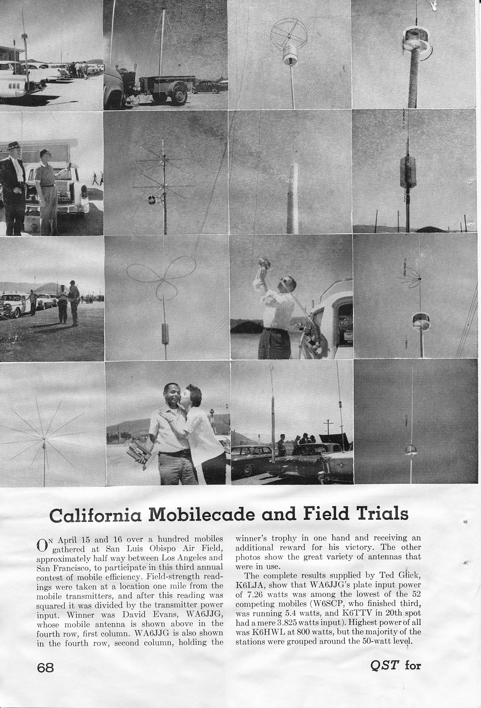

Recovered article. HTML body is from Common Crawl (text only); images came from the Sep 2022 iOS PDF:
Antenna Shootouts.pdf ·
8 extracted images & links ·
8 of 8 images merged inline (aspect-ratio matched). Original src preserved on each
<img> as
data-original-src.
Contents: Introduction; Basics; The Variables; Winning Strategies; A Better Strategy;
Introduction

In the April 1960 issue of QST was a short blurb on page 57 about the second annual California Mobilecade and Field Trials, to be held in San Luis Obispo. These were the first antenna shootouts of record.
The rules make very interesting reading, and one standout is the fact the receiving antenna was to be located 4,900 feet away! Additional stations 10 to 100 miles away were going to be used to verify the closer-in measurements. Keep this fact in mind. Further, the rules and regulations, required entrants to use the same antenna setup they arrived with. In other words, the antenna in question must be Road Worthy!
The results of the third trial were published in the July 1961 issue of QST. Included with the article was a montage of 16 photos shown at right (click to open in new page). Probably the most interesting fact was, almost without exception, each entrant's antenna sported a cap hat. One of those was nearly identical to the one I currently use. Incidentally, the winner of the third shootout was David Evans, WA6JJG, the man being kissed. His antenna is pictured in the fourth row, first column. Make note of the fact that his input power was a scant 7.26 watts!
Basics
What really counts more than Antenna Efficiency, is it the overall performance of the antenna as a system! As examples, the antenna's basic design, mounting style and location, and even the way it is wired all effect performance. Unfortunately, very little thought goes into antenna performance at purchase time.
 Mobile HF antennas come with a variety of coil sizes, overall length, coil and mast diameter, and where within the antenna the coil is located. These factors also effect how the RF current is distributed over the length of the antenna, which directly determines the radiation resistance (Rr).
Mobile HF antennas come with a variety of coil sizes, overall length, coil and mast diameter, and where within the antenna the coil is located. These factors also effect how the RF current is distributed over the length of the antenna, which directly determines the radiation resistance (Rr).
 The optimum position for the coil (point of maximum efficiency for any given installation) is directly related to how much ground loss there is, and to a lessor degree the coil's Q factor. The chart shown left (courtesy of the ARRL) illustrates the relationship between the coil position, and ground loss. And since ground loss is the largest factor in the efficiency formula, keeping it as low as possible is paramount. Therefore, the best mounting location is the one with the most metal mass directly under the antenna—what's along side doesn't count!
The optimum position for the coil (point of maximum efficiency for any given installation) is directly related to how much ground loss there is, and to a lessor degree the coil's Q factor. The chart shown left (courtesy of the ARRL) illustrates the relationship between the coil position, and ground loss. And since ground loss is the largest factor in the efficiency formula, keeping it as low as possible is paramount. Therefore, the best mounting location is the one with the most metal mass directly under the antenna—what's along side doesn't count!
This isn't the whole story, and here are a few salient points to keep in mind. Ground losses aren't easy to calculate, and cannot be directly measured, although they are part of the input impedance.
Coil Q cannot be measured when the coil is mounted within the antenna, and requires special equipment when it isn't mounted. Here too, the resistive Q losses are part of the input impedance, but cannot be measured directly.
Making matters worse, we really don't know, at least with certainty, the radiation resistance (Rr). One thing we do know, Rr is a function of the electrical length, and follows the square-law rule. That is, double the electrical length of the antenna, and the Rr increases by four times. This means, that a 9 foot antenna will have twice the Rr as a 6 foot one, all else being equal.
The Variables
As mentioned above, ground loss is the largest contributing factor in the efficiency equation. While bonding helps, mounting position is more important. If the mounting position is low, trailer hitch mounting for example, more of the return current is forced to flow through the lossy surface under the vehicle rather than through the less lossy body of the vehicle in question.
The second most important factor is coil Q. The lower the Q the higher the coil losses will be. It is often thought that large diameter coils have higher Qs than smaller ones. While that's true to a point, coils larger than about 3 inches have greater distributed capacitance. As a result, their Q is actually lower than a smaller diameter (and longer length) coil with the same reactance. Further, as the required reactance increases, the coil's length to diameter ratio also increases. In other words, short fat coils don't work as well as longer, skinnier ones particularly on the lower bands where most shootouts are done.
Coils with large end caps and metal shorting plungers exhibit even more distributed capacitance. As a result, their self-resonant frequency is lower. As the operating frequency increases, so does the coil's Q losses. The additional Q losses aren't typically noticed, as the effective electrical length (closer to a quarter of a wave) also increases. Noticed or not, the losses are still significant, and antennas designed this way always lose shootouts.
Besides coil diameter, wire diameter (gauge), turn spacing, and its supporting structure (dielectric) all have an effect on Q. If you jump through all of the mathematical hoops, you'll discover that a 3 inch diameter coil, wound with #10 gauge wire, spaced 6 turns per inch, will have the most consistent (highest average) Q across 80 through 10 meters.
As noted above, radiation resistance is a function of the electrical length of the antenna, and how the RF current is distributed along that length. Since we're limited to a maximum physical length of about 1o feet (top of quarter panel mounting assumed), we have to find a better way to raise the current node, which in turn increases radiation resistance, other than lengthening the antenna. Cap hats do exactly that, hence their wide use in the California Mobilecade and Field Trials.
 Cap hats are a mixed bag of tricks, especially so if they're not mounted correctly. They also increase wind loading, requiring sturdy antenna construction. This fact is the reason some users incorrectly mount them (too close or atop the coil). Remember, a cap hat will exhibit the same capacitance affect qualitatively, no matter where within the antenna's superstructure it is mounted. Therefore, the increase seen in the input impedance will be about the same in any case. Whether that increase is caused by an increase in radiation resistance, or by a reduction in coil Q, depends on the implementation of said cap hat. The optimum position will always be at the very top of the antenna structure as depicted in the upper right photo, not atop the coil as pictured left!
Cap hats are a mixed bag of tricks, especially so if they're not mounted correctly. They also increase wind loading, requiring sturdy antenna construction. This fact is the reason some users incorrectly mount them (too close or atop the coil). Remember, a cap hat will exhibit the same capacitance affect qualitatively, no matter where within the antenna's superstructure it is mounted. Therefore, the increase seen in the input impedance will be about the same in any case. Whether that increase is caused by an increase in radiation resistance, or by a reduction in coil Q, depends on the implementation of said cap hat. The optimum position will always be at the very top of the antenna structure as depicted in the upper right photo, not atop the coil as pictured left!
The basic design of the cap hat is also important. The incorrectly mounted cap hat at left consists of straight wires without an enclosing rim. Theoretical and empirical analysis prove this is a poor design (albeit less likely to snag on an errant tree limb). These analyses also show the most efficient design vs. wind loading, is the three loop design.
 There are a couple of more variables which needs to be covered, and one of those is the mean angle of radiation (point of maximum power). Although it doesn't vary with the amount of ground loss, the power at any given take off angle does vary as can be clearly seen in the chart at right.
There are a couple of more variables which needs to be covered, and one of those is the mean angle of radiation (point of maximum power). Although it doesn't vary with the amount of ground loss, the power at any given take off angle does vary as can be clearly seen in the chart at right.
Mobile antennas are seldom mounted dead center of the roof. Even if they were, the radiation pattern would still be distorted. When mounted on the left rear (as they usually are here in the USA), the pattern is even more distorted. However, the 360° difference is signal strength averages ≈3 dB, but may be somewhat more on van and SUV type vehicles. It should also be noted, that the greatest field strength isn't always toward the greater mass of the vehicle, especially on vans and SUVs.
There are some variables we can't control, and they need to be mentioned as well. One of those is the methodology used to determine field strength. Usually, a small receiving loop is used, and attached to a digital voltmeter. Where it is in relation to the antenna under test, how far away, and how high above the ground all effect the detected RF voltage level.
Ideally, the vehicle should be orientated so that the strongest lobe is towards the receiving antenna. While it is assumed that is towards the most metal mass, that isn't always the case. Further, the distance from the antenna under test, should be at least 5 wave lengths (≈1,200 feet), or well into the far field which is seldom the case. Most important, the receiving loop's height above ground should be at least 1/4 wave length (≈60 feet). If it isn't, near by objects, including measurement personnel, will effect the receive strength.
How the test signal is generated is important too. The test transmitter should be self contained, and on-board the vehicle. Those with coax cables running to an off-vehicle transmitter are suspect as the coax acts like a single radial highly affected by its surroundings.
Lastly, it should be a standard rule, that participants must use a Road-Worthy antenna. That is to say, the one they drove to the testing site with (≤13.5 feet above ground), and without any additional on-site attachments such as radial wires, trailer-hitch-mounted platforms, etc.
☜Return☜
Winning Strategies
The hints here are born out of the winning entrants of a number of antenna shootouts, and are not necessarily personal recommendations.
1). Mount your antenna with as much metal mass directly under the antenna as possible. This is why pickup trucks with the antenna mounted in the center of the bed are consistent winners.
2). Forget huge coils, especially ones with large metal end caps. Again, the optimum coil size is ≈3 inches, and wound with at least size 12 wire.
3). Use a large, properly mounted, cap hat, as large as shootout rules allow. Forget about birdcage designs which increase shunt capacitance, as they're consistent losers!
4). Bonding is important, and you almost can't do too much. However, running ground straps hither and yon to lower ground losses, will not replace proper mounting!
5). Know which direction to orient your vehicle to maximize the signal strength at the receiving site. That is typically toward the greatest mass, but not always!
6). Properly match your antenna to minimize coax cable losses. After all, every little fraction of a dB counts!
7). When the measurement is being carried out, either stay in your vehicle with the doors closed, or stay away from it as far as practical.
No winning strategy would be complete without mentioning what not to do, unless of course you don't care about being embarrassed!
a). Clip mounted antennas will always be at the bottom of the listings! Always!
b). Any antenna which doesn't require matching (SWR less than 1.6:1 at resonance) will be at the bottom of the listings. Short stubby ones for example.
c). The larger the end caps, the lower the standing.
d). Coils larger than 3.5 inches in diameter show poorly, especially on 40 and 20 meter test frequencies
e). Antennas which use shorting bars or flying leads have lower coil Qs, hence lower score standings.
f). If you lose,
don't blame the shootout personnel for your loss!
☜Return☜
A Better Strategy
From a personal standpoint... I am of the opinion that antenna shootouts leave a lot to be desired. While they test the transmit signal strength of an installation, there are too many variables left untested, and in doubt. Not the least of which, are changes in local ambient conditions which highly effect overall system losses. There is another way, and that is measuring the Signal To Noise Ratio (SNR). Included then would be a specific installation's RFI suppression, receiver sensitivity, coax losses, mounting losses, and the list goes on. The point here is, it doesn't make much difference if the other station can hear you, if you can't hear them!

 One way to measure SNR comparatively requires a piece of hardware, and a stable signal source. The piece of hardware is a Sinadder, as made by Helper Instruments and others. If you don't understand how a Sinadder works, here's a simple explanation. The Sinadder is really a distortion analyzer. An RF signal source, modulated with a 1 kHz tone, in fed to the transceiver's antenna connection. A notch filter removes the 1 kHz signal, and anything left over is extraneous noise. The signal strength of the left over noise is what the meter measures, which explains why the meter scale reads backwards.
One way to measure SNR comparatively requires a piece of hardware, and a stable signal source. The piece of hardware is a Sinadder, as made by Helper Instruments and others. If you don't understand how a Sinadder works, here's a simple explanation. The Sinadder is really a distortion analyzer. An RF signal source, modulated with a 1 kHz tone, in fed to the transceiver's antenna connection. A notch filter removes the 1 kHz signal, and anything left over is extraneous noise. The signal strength of the left over noise is what the meter measures, which explains why the meter scale reads backwards.
Although meant for use with commercial FM transceivers (SINAD, Signal To Noise Ratio + Distortion), it is also usable for SSB as explained below. Helper is out of business, and their successor(s) stopped making the device. However, used ones are readily available on-line. There are several models, but any of them will do the job. Used pricing varies from as low as $20 up to $200 depending on the model and condition. A decent-quality, all-mode service monitor can used as well.
Setting up for SSB use is really easy, but you need a steady signal source. A transceiver running very low power (≈1 watt) into a dummy load is one source, an antenna analyzer is another, or you could use the aforementioned service monitor. WWV or CHU Canada can also be used. Just connect the input of the Sinadder to the audio output of the transceiver. Turn off the AGC in the transceiver, and back off the RF gain control. Turn on the Sinadder, and bring up the RF gain until the meter just comes off full scale. Then, adjust the VFO to beat with the signal source until the Sinadder shows the lowest reading. This will occur when the receiving heterodyne is right at 1 kHz. Depending on the instrumentation used, accuracy can be as close as a few tenths of a dB.
For those who try this method to make comparisons between one mobile installation or another; exhaust bonding in place or not; noise blanker on or off; ferrite chokes in place or not; will notice several scenarios which bring transmit antenna tests into question. As noted above, this method will detect very small changes in SNR (≤ .5 dB). For example, while measuring the SNR, simply placing your hand on the vehicle can change the reading rather significantly! So will walking between the signal source and the receiving antenna! Physically touching the antenna may change the SNR by 15 dB or more! Even local ambient conditions like temperature, humidity, people mulling around, extraneous RFI sources—even cellphones is some cases—can all effect the readings.
And lastly... Antennas follow the law of reciprocity, in that any gain (or loss) they exhibit, will be reciprocal (equal). However, antenna performance IS NOT reciprocal! The more variables present, the less accurate the measurement. So think about these variables the next time you're at a shootout.
☜Return☜
Home
 Mobile HF antennas come with a variety of coil sizes, overall length, coil and mast diameter, and where within the antenna the coil is located. These factors also effect how the RF current is distributed over the length of the antenna, which directly determines the radiation resistance (Rr).
Mobile HF antennas come with a variety of coil sizes, overall length, coil and mast diameter, and where within the antenna the coil is located. These factors also effect how the RF current is distributed over the length of the antenna, which directly determines the radiation resistance (Rr).